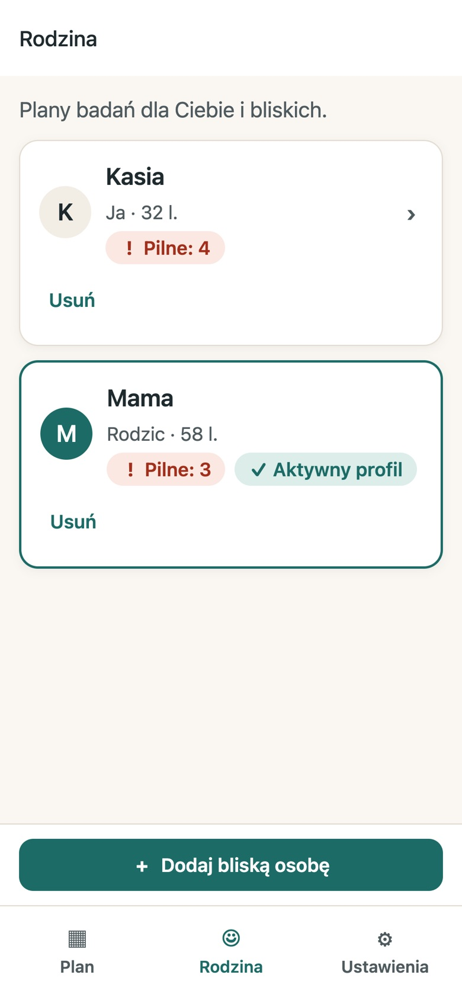

Dla opiekunów
Zdrowie mamy i swoje — na jednym telefonie
- Profile rodzinne — przełącznik Ja / Mama, licznik pilnych badań przy profilu mamy
- Przygotowanie do wizyty — podsumowanie dla lekarza rodzinnego: „Proszę o skierowanie na…”, czynniki ryzyka, lista badań (ekran lub PDF)
- Karta aktywności — mały, osiągalny krok ruchu dopasowany do odpowiedzi z ankiety
